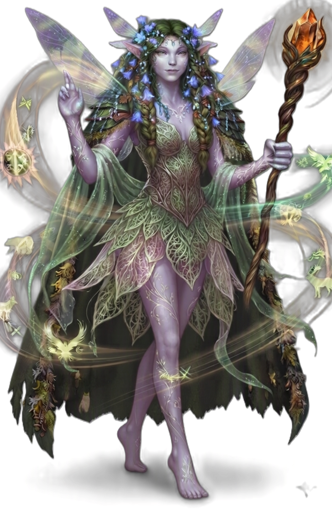

| Rolle | Vollzauberer · Naturzauberer · Gestaltwandler · Heiler · Kontrolle |
| Zauberertyp | Vollzauberer Zauberslots bis Rang 9 |
| Primärer Schadensattribut | Weisheit (WIS) |
| Sekundärer Schadensattribut | — |
| Zauberattribut | Weisheit (WIS) |
| TP (L1) | 8 |
| TP pro Level | 5 |
| Rüstung | Mittlere Rüstung (kein Metall) |
| Waffen | Naturwaffen — Keule, Dolch, Wurfpfeil, Speer, Schleuder, Streitkolben |
| Rettungswürfe | Weisheit (WIS), Intelligenz (INT) |
| Attributsteigerung (Level) | 4, 8, 12, 16 |
| Fertigkeiten (2 zur Auswahl) | Naturkunde, Tierkunde, Überzeugen, Medizin, Wahrnehmung |
Der DRUIDE ist der Hüter der Natur — er kanalisiert die Wildnis in Naturmagie, Gestaltwandeln und elementare Gewalt. Weisheit treibt seine Zauber, und wie der KLERIKER ist er robust: mittlere Rüstung, 8 TP auf Level 1. Seine Gestaltwandeln (L2) ist das Herzstück — 2/Kurze Rast verwandelt er sich in ein Tier, mit höheren Levels immer mächtigere Formen. Seine Zauber decken das gesamte Spektrum der Natur ab: Eisfangriff friert Gegner fest, Pflanzenwachstum macht Gelände schwer passierbar, Blitzschlag und Sonnenstrahl richten massiven Schaden an, Heilung der Natur und Heilung der Lande heilen Verbündete. Mit Naturzuflucht (L10) wird er immun gegen Gift, mit Bestienform (L14) bekommt er Resistenz gegen Kreaturschaden. Tierzauber (L18) lässt ihn in Tiergestalt zaubern, Erzdruide (L20) gibt ihm unbegrenzte Gestaltwandeln. Er ist der vielseitigste Naturzauberer — Heilung, Schaden, Kontrolle und Gestaltwandeln in einer Klasse.
| Level | Fähigkeit | Beschreibung |
|---|---|---|
| L1 | Druidisch | Geheime Sprache der Druiden — nur für Druiden verständlich. |
| L2 | Gestaltwandeln | 2/Kurze Rast: Verwandle dich in ein Tier (CR-begrenzt). Übernimm TP, Attribute und Fähigkeiten der Form. |
| L3 | Naturverbundenheit | Wähle 2 zusätzliche Zauber aus der Druide-Liste (bis Rang 2). |
| L4 | Gestaltwandeln Verbesserung | Höhere CR-Grenze für Gestaltwandeln (schwimmende/flugfähige Formen). |
| L5 | Naturverbundenheit II | Passiv: +2 Weisheit. |
| L6 | Landritt | Passiv: Kein Bewegungsverlust durch schwieriges Gelände. |
| L10 | Nebelform | Passiv: Permanent unsichtbar bei schwachem Licht. |
| L10 | Naturzuflucht | Passiv: Immun gegen Gift, Vorteil gegen Verängstigt. |
| L14 | Bestienform | Passiv: Resistenz gegen Gift- und Kreaturschaden (50%). |
| L18 | Tierzauber | Passiv: Zauber in Tiergestalt wirken. |
| L20 | Erzdruide | Passiv: Unbegrenzte Gestaltwandeln, Zauber-Komponenten ignoriert. |
Alle Zauber nutzen Zauberslots (Vollzauberer-Progression, Rang 1–9). Zauberattribut ist Weisheit (WIS). Upcast-Skalierung pro zusätzlichem Zauberslot bei Eisfangriff (+1W6), Mondlicht (+1W4), Blitzschlag (+1W8), Heilung der Lande (+1W8 Heilung), Sonnenstrahl (+1W8), Heilung der Natur (+1W4 Heilung).
| Fähigkeit | Aktion | Nutzung | Level | Beschreibung |
|---|---|---|---|---|
| Dornranke | Aktion | Basiszauber — unbegrenzt | L1 | NATUR 1W6 Naturschaden, Angriffswurf. |
| Fähigkeit | Aktion | Nutzung | Level | Beschreibung |
|---|---|---|---|---|
| Eisfangriff | Aktion | Zauberslot 1 | L1 | FROST 2W6 Frost + GES-Rettungswurf oder festgehalten. Upcast: +1W6 pro Slot. |
| Heilung der Natur | Aktion | Zauberslot 1 | L1 | NATUR Berührung: Heile 2W4+2. Upcast: +1W4 Heilung pro Slot. |
| Mondlicht | Aktion | Zauberslot 2 | L3 | LICHT 3W4 Heilig + KON-Rettungswurf (halber Schaden bei Erfolg), Reichweite 18. Upcast: +1W4 pro Slot. |
| Pflanzenwachstum | Aktion | Zauberslot 2 | L3 | NATUR Flächeneffekt 20ft: Schwieriges Gelände für Gegner (1 Minute). |
| Blitzschlag | Aktion | Zauberslot 3 | L5 | STURM 5W8 Blitz + GES-Rettungswurf (halber Schaden bei Erfolg). Upcast: +1W8 pro Slot. |
| Heilung der Lande | Aktion | Zauberslot 3 | L5 | NATUR Flächeneffekt 10ft: Heile alle Verbündeten 3W8. Upcast: +1W8 Heilung pro Slot. |
| Sonnenstrahl | Aktion | Zauberslot 4 | L7 | LICHT 6W8 Heilig + KON-Rettungswurf oder geblendet (1 Minute). Upcast: +1W8 pro Slot. |
| Steinhaut | Aktion | Zauberslot 4 | L7 | NATUR Verbündeter erhält +3 RK für 1 Minute. |
| Fähigkeit | Aktion | Nutzung | Level | Beschreibung |
|---|---|---|---|---|
| Gestaltwandeln | Aktion | 2/Kurze Rast | L2 | Verwandle dich in ein Tier (CR-begrenzt). Übernimm TP, Attribute und Fähigkeiten der Form. |
| Urkraft | Aktion | 1/Lange Rast | L20 | Verwandle dich in eine mächtige Bestie für 1 Stunde. |
| Ressource | Mechanik | Verfügbarkeit |
|---|---|---|
| Zauberslots | Vollzauberer-Progression (Rang 1–9). Zauberattribut: WIS. | Alle Zauber, pro Zauberslot |
| Gestaltwandeln | Tierverwandlung (CR-begrenzt, skaliert mit Level) | 2/Kurze Rast (unbegrenzt ab L20) |
| Urkraft | Verwandlung in mächtige Bestie für 1 Stunde | 1/Lange Rast |